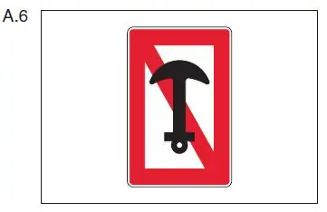
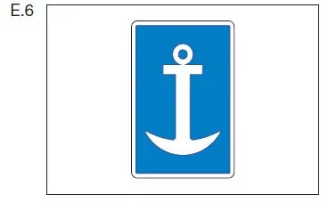

§ 7.03 Ankern und Verwendung von Pfählen
Binnenschifffahrtsstraßen-Ordnung
1. Ein Fahrzeug, ein Schwimmkörper oder eine schwimmende Anlage darf nicht ankern:
a) auf einem Schifffahrtskanal, in einem Schleusenkanal oder auf dem Abschnitt einer Wasserstraße, für den ein allgemeines Ankerverbot besteht;
b) auf einer durch das Tafelzeichen A.6 (Anlage 7) gekennzeichneten Strecke, auf der Seite der Wasserstraße, auf der das Tafelzeichen steht; das Ankerverbot gilt von 50,00 m oberhalb bis 50,00 m unterhalb des Tafelzeichens. |  |
Auf den Strecken nach Satz 1 ist es verboten, einen Pfahl in oder auf den Grund zu drücken. Abweichend von Satz 2 kann die zuständige Behörde für Fahrzeuge zur Durchführung von Bauarbeiten die Verwendung eines Pfahles zulassen.
2. Auf einem Abschnitt, auf dem das Ankern nach Nummer 1 Buch- stabe a verboten ist, darf ein Fahrzeug, ein Schwimmkörper oder eine schwimmende Anlage nur auf einer Strecke ankern, die durch das Tafelzeichen E.6 (Anlage 7) gekennzeichnet ist, und nur auf der Seite der Wasserstraße, auf der das Tafelzeichen steht. |  |